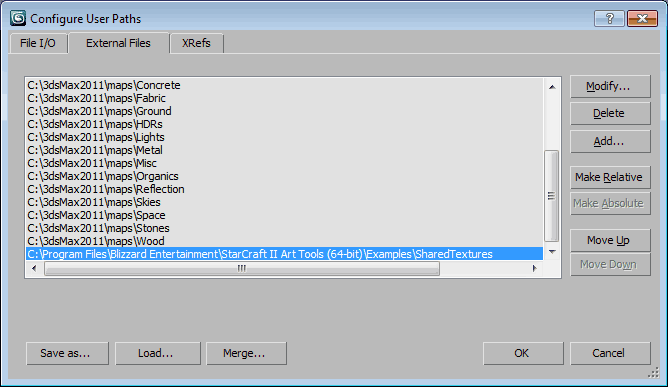

Getting Started
Thank you for downloading the StarCraft II Art Tools! The StarCraft II Art Tools are the same tools which are used in-house by Blizzard Entertainment to develop StarCraft II: Wings of Liberty and StarCraft II: Heart of the Swarm. We are excited about putting these tools into the hands of mod makers for StarCraft II. These tools augment the power and flexibility of the StarCraft II Editor. We look forward to seeing all the amazing and epic experiences that players can create with these extra capabilities. Good Luck and Have Fun!
Setup
-
The StarCraft II Art Tools are only compatible with Autodesk 3ds Max 2011. If the installer was used, the tools should already be available inside 3ds Max 2011. You can verify that the tools were properly installed by looking for the SC2ArtTools menu on the main menu bar of 3ds Max 2011, or by verifying that Star2Exporter.dlt is loaded in Customize > Plug-in Manager.
-
To complete the installation, run 3ds Max and set up the path to your StarCraft II executable. This will allow the Preview function to launch the StarCraft II Editor directly. To do this, select the menu item SC2ArtTools > Export > Set BuildPath. A popup will prompt you to put the path to were you have installed StarCraft II.
- An example path might look like: C:\Program Files (x86)\StarCraft II\
-
The StarCraft II Art Tools have a few helper plug-ins including Star2OggPlugin.bmi and NullHelper.dlo.
-
If the installer could not find 3ds Max 2011 at the time of installation, then you can use the following steps to manually finish the installation.
Copy d3dx9_42.dll into the 3ds Max installation folder.
Copy all contents from the StarCraft II Art Tools plugins folder into the 3ds Max plugins folder.
Copy all contents from the StarCraft II Art Tools ui folder into the 3ds Max ui folder.
Verify that the 3ds Max subfolder plugins appears as a valid plug-in path in Customize > Plug-in Manager. If the path is not listed, it can be added in Customize > Configure System paths > 3rd Party Plug-Ins (Tab).
Sample Files
-
The Tutorials section is provided to give a basic walk-through of the StarCraft II Art Tools. It is a good place to start and introduces, in order, the basic concepts of the StarCraft II art process. We have included example files, which are located in the StarCraft II Art Tools Examples subfolder, in the target directory chosen at installation.
Example files are only for use with StarCraft II as per the license agreement in the Installer. The license can be reviewed in the file LICENSE_SC2ArtTools.rtf within the StarCraft II Art Tools installation folder.
-
These example files have been added to help you understand the basic process for getting art assets into the StarCraft II engine. Directly editing files in the Examples folder is not recommended, as these files will be removed when the StarCraft II Art Tools are Uninstalled.
-
These example files use a shared texture directory. For the textures to show up correctly, it is recommended that you add the \Examples\SharedTextures subfolder from your install directory to 3ds Max's list of resource paths at Customize > Configure User Paths... > External Files (Tab).

Community
The Official Art Tools and Cutscenes Forum exists for sharing experiences, knowledge, and feedback. Please join us and your fellow creators there!
Known Issues
There are some Known Issues in the StarCraft II Art Tools. It is recommended that users be somewhat familiar with these issues, just in case you unknowingly encounter one of them which might negatively impact your experience.